Especialistas em nutrição vegetal para fruticultura, hortaliças e paisagismo ornamental na região de Indaiatuba. 15+ anos transformando plantios com consultoria técnica de engenheiros agrônomos.
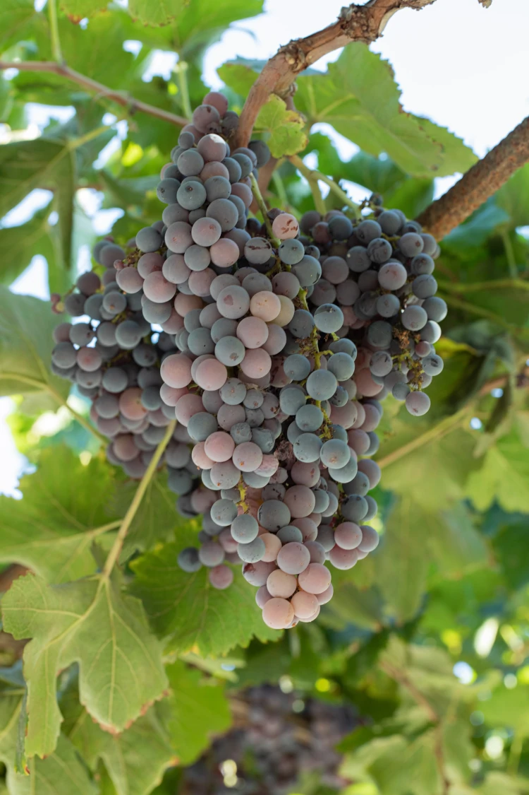
"A Plant Quality transformou minha produção. Com a consultoria técnica e os produtos certos, aumentei minha produtividade e reduzi custos significativamente."
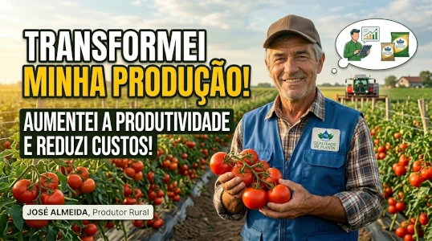
A Plant Quality Insumos Agrícolas é referência na região de Indaiatuba e cidades adjacentes. Atendemos produtores de fruticultura, hortaliças e paisagismo ornamental com produtos de marca própria desenvolvidos especialmente para as necessidades específicas do nosso clima e solo.
Engenheiros agrônomos especializados atendendo presencialmente
Atendimento personalizado e estoque disponível no local
Fórmulas desenvolvidas para a realidade da nossa região
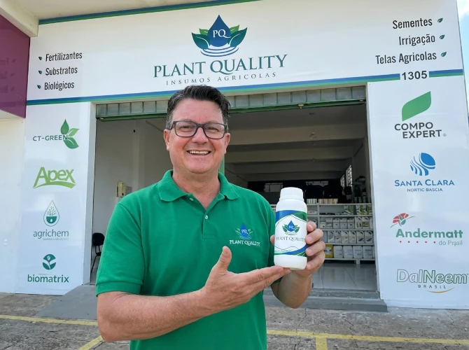
Com mais de 15 anos de experiência no ramo agrícola, Jorge é o fundador e rosto da Plant Quality. Especialista em nutrição vegetal e consultor técnico, ele está sempre presente na loja atendendo pessoalmente aos produtores da região.
"Nosso compromisso é oferecer soluções reais que aumentem a produtividade dos nossos clientes sem aumentar seus custos."
Formulações especiais para cada fase do desenvolvimento
Variedades selecionadas para o clima da região
Proteção eficaz contra pragas e doenças
Potencializadores de eficiência dos tratamentos
Análise de composição química do solo
Formulação de programa nutricional
Entrega e aplicação dos insumos
Acompanhamento técnico constante
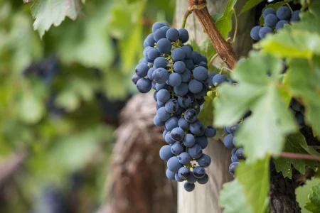
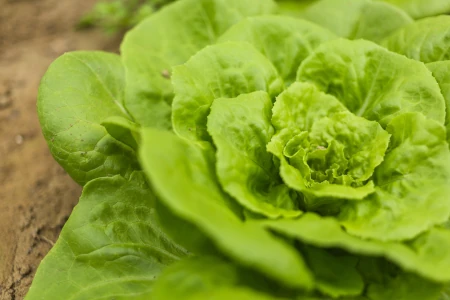
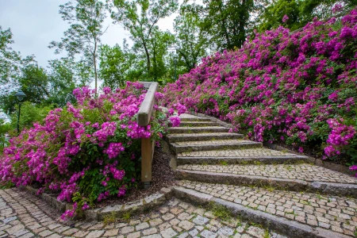
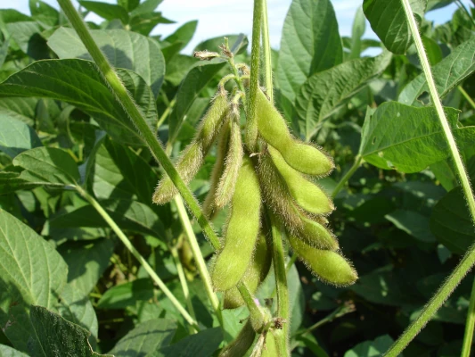
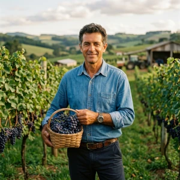
"Aumentamos nossa produtividade em 40% e reduzimos custos em 25% com as recomendações da Plant Quality"
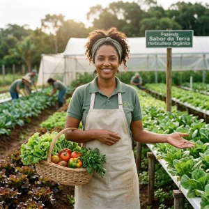
"A consultoria técnica fez toda a diferença no manejo da minha horta comercial"
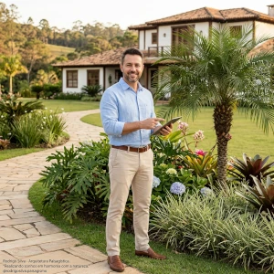
"Produtos de qualidade superior e entrega imediata no local"
"Como Aumentar a Produtividade das Suas Culturas em até 50% com Nutrição Vegetal Inteligente"
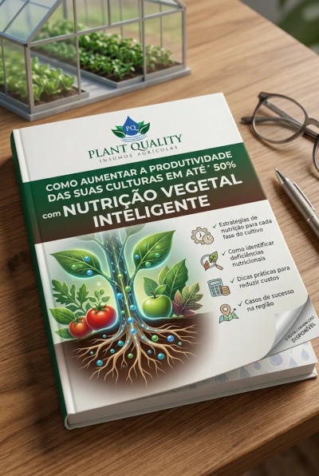
Parcerias estratégicas com as principais marcas do mercado para oferecer o melhor em nutrição vegetal e insumos agrícolas para a sua produção.
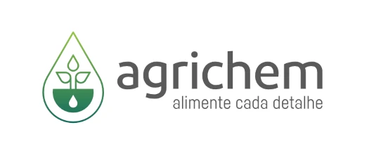
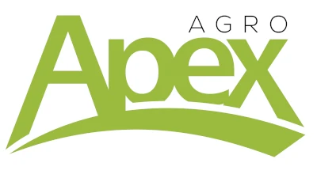
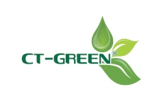
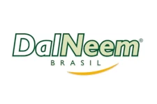
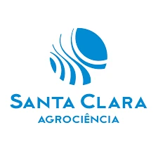
Análise inicial das necessidades do seu plantio
Coleta de solo e avaliação técnica detalhada
Formulação do programa nutricional ideal
Entrega rápida e orientação de aplicação
Responda algumas perguntas rápidas e receba uma avaliação personalizada da sua situação atual com recomendações específicas para melhorar sua produtividade.
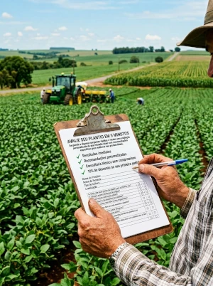
Atendemos produtores de toda a região de Indaiatuba, Salto, Itu, Monte Mor, Capivari e Sorocaba. Especializamo-nos em fruticultura (uvas, citros, maçãs, pêras), hortaliças (alface, tomate, pepino, feijão), paisagismo ornamental (gramados, jardins, árvores ornamentais) e grãos (milho, soja, trigo). Desenvolvemos fórmulas específicas para as condições climáticas e do solo da nossa região.
Nossa avaliação gratuita inclui coleta de amostras de solo, análise laboratorial e diagnóstico técnico completo. Atendemos toda a região de Indaiatuba, incluindo bairros como Jardim Juliana, Vila Sônia, Parque das Nações, Jardim Morada do Sol e áreas rurais. Um engenheiro agrônomo visita seu plantio, coleta as amostras e elabora um relatório com recomendações personalizadas de correção e adubação para suas culturas, considerando as características específicas do solo da nossa região.
Para a região de Indaiatuba e cidades adjacentes (Salto, Itu, Monte Mor), garantimos entrega em até 24 horas após a confirmação do pedido. Aceitamos pagamento via PIX, cartão de crédito, boleto bancário e dinheiro. Para compras acima de R$ 500,00 na região de Indaiatuba, oferecemos entrega gratuita.
Sim, somos referência em nutrição vegetal na região de Indaiatuba há mais de 15 anos. Nossa equipe é composta por engenheiros agrônomos formados por universidades reconhecidas, com especializações em solos, nutrição de plantas e manejo integrado de pragas. Atendemos mais de 500 produtores na região, com taxa de satisfação de 95%. Trabalhamos em parceria com instituições de pesquisa como a UNESP Botucatu e o Instituto Agronômico de Campinas (IAC).
Para uvas na região de Indaiatuba, desenvolvemos fórmulas específicas que consideram o clima subtropical e as características do solo local. Nossos fertilizantes de marca própria são produzidos com matérias-primas de alta pureza e tecnologia de liberação controlada, proporcionando melhor eficiência de nutrientes e redução de perdas. Diferenciamo-nos pela assistência técnica personalizada e pela formulação adaptada às necessidades específicas das culturas da nossa região.
Você pode comprar apenas os insumos, mas nossos estudos com produtores da região de Indaiatuba demonstram que quem utiliza a consultoria técnica obtém resultados 35% melhores em produtividade e redução de custos. A avaliação do solo e das necessidades específicas da sua cultura na nossa região garante que você utilize os produtos corretos na dose e no momento adequados, evitando desperdícios e maximizando a produtividade. Oferecemos pacotes de consultoria mensal para acompanhamento contínuo.
Na região de Indaiatuba, os principais desafios são a acidez do solo, deficiência de matéria orgânica e desequilíbrio de nutrientes. Desenvolvemos corretivos e adubos específicos para as condições do solo local, com base em mais de 10 anos de análise de amostras da região. Nossa abordagem integrada inclui correção do pH, reposição de matéria orgânica e balanceamento nutricional, resultando em solos mais produtivos e sustentáveis.
Sim, atendemos hortas orgânicas em toda a região de Indaiatuba. Oferecemos linha completa de fertilizantes orgânicos certificados pelo Ministério da Agricultura, Pecuária e Abastecimento (MAPA). Trabalhamos com adubos verdes, composto orgânico, farinhas de ossos e outros insumos aprovados para agricultura orgânica. Nossa consultoria inclui manejo integrado de pragas e doenças sem o uso de produtos químicos sintéticos.
Não perca mais tempo com soluções genéricas. Agende sua avaliação gratuita e descubra como a Plant Quality pode aumentar sua produtividade e reduzir seus custos.